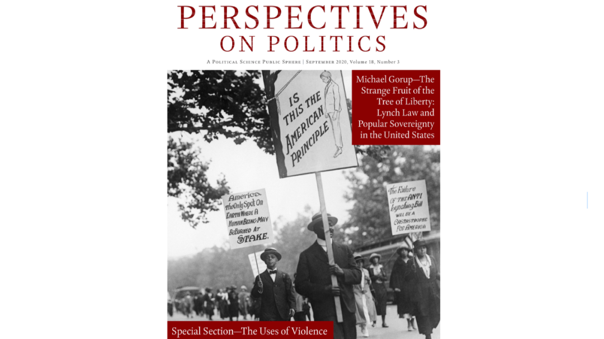

收录于合集 #新刊速递 2个
期刊简介： 《政治透视》（Perspective on Politics）是美国政治学会（American Political Science Association）旗下的知名季刊。自2003年创刊并由剑桥大学出版社出版以来，其为政治学共同体内部以及政治学学科与广大读者之间提供了广阔并且具有综合性的讨论平台。
编者按： 政观对英文专业期刊摘要的翻译工作主要由团队中的在读博士生自愿组织进行，受学生学识及翻译水平所限，译文可能有诸多不当之处，还望读者们见宥，也欢迎留言讨论。此外，由于版权所限，需要阅读原文的读者请通过所在学校/机构的图书馆数据库或其他途径访问下载。

期刊目录
1. The Politics -of Criminal Victimization: Pursuing and Resisting Power
2. A Path out of Patriarchy? Political Agency and Social Identity of Women Fighters
3. The Cost of Doing Politics? Analyzing Violence and Harassment against Female Politicians
4. Rule by Violence, Rule by Law: Lynching, Jim Crow, and the Continuing Evolution of Voter Suppression in the U.S.
5. Explaining Ethnoreligious Minority Targeting: Variation in U.S. Anti- Semitic Incidents
6. Public Emotions and Variations of Violence: Evidence from Colombia
7. Reconceptualizing Political Knowledge: Race, Ethnicity, and Carceral Violence
8. Wait, There’s Torture in Zootopia? Examining the Prevalence of Torture in Popular Movies
9. The Strange Fruit of the Tree of Liberty: Lynch Law and Popular Sovereignty in the United States
10. “Tough Love”: The Political Theology of Civil Disobedience
11. Demography and the Future of Democracy
1. 犯罪受害的政治：
追求和抵制权力
题目： The Politics -of Criminal Victimization: Pursuing and Resisting Power
作者： Eduardo Moncada，哥伦比亚大学巴纳德学院政治学助理教授
摘要： 对犯罪受害的传统看法认为这是一种痛苦的行为。这忽略了一层受害者和犯罪实施者之间充满争议和变化的政治，而学界对此还未进行过分析。本文建立了一个新的理论框架来分析受害人和犯罪实施者在犯罪- 受害的政治过程中用来追求和抵制权力的策略性行为。这一框架可以使我们更好地观察并对其进行概念化和理论化：受害人如何运用能动性以及犯罪实施者用来实施和维持迫害而采取的行为及实践，而这些恰恰是传统的研究所忽略的，因为传统研究的关注焦点在于他们对暴力的使用和威胁。本文通过对一个处于犯罪集团保护伞下的拉丁美洲大城市中的非正规街头小贩的受害情况进行实证分析，说明了该框架的分析效用。这一论点和实证结果为扩大和深化有关犯罪受害政治的研究议程提供了途径。
The conventional approach to criminal victimization views it as a traumatic but one-time act. This overlooks a layer of contentious and dynamic politics between victims and criminal actors that we have yet to analyze. I develop a new theoretical framework to analyze the strategic behaviors that victims and criminal actors use to pursue and resist power as part of the political process of criminal victimization. The framework enables us to better observe, conceptualize, and theorize how victims exercise agency vis-à-vis their criminal perpetrators, as well as behaviors and practices that criminal actors undertake to carry out and sustain victimization, but which are overlooked by the traditional focus on their use and threat of coercive force. I illustrate the framework’s analytic utility with an empirical analysis of the victimization of informal street vendors in a major Latin American city under a criminal protection racket. The argument and empirical findings suggest ways to expand and deepen the research agenda on the politics of criminal victimization.
2. 走出父权制的道路?
女战士的政治能动性和社会认同
题目： A Path out of Patriarchy? Political Agency and Social Identity of Women Fighters
作者： Gu ̈nes‚ Murat Tezcu ̈r，中佛罗里达大学政治学教授
摘要： 世界各地的暴力运动雇用了大量的女战士。作者提出了众多来自不同背景的女性是如何以及为何加入族群叛乱的问题。根据交叉的方法，作者认为当性别不平等和族群不平等交叠时，一场有望实现性别解放的族群叛乱将在女性中产生强烈的吸引力。与此同时，阶级和性别的交汇塑造了少数民族女性间的独特动员模式。特别是，没有受过教育的下层阶级的女性参加了这场运动，因为它为她们提供了摆脱父权关系的最可行的途径。本文采用了一个包含多种方法的研究设计来研究武装女性的典型案例：库尔德叛乱。本文使用了一个含有9000多名武装分子信息的大型原始数据集，这些信息来自涉及数十次深度访谈的广泛田野调查，以及对以当地原始语言形式呈现的信息来源进行档案研究。本文的研究结果揭示了基于族群、性别和阶级的不平等关系对暴力政治动员的影响，以及女性的政治能动性和赋权之间的矛盾关系。
Violent movements in different parts of the world have employed large numbers of women fighters. I address the question of how and why so many women from diverse backgrounds join an ethnic insurgency. Informed by an intersectional approach, I suggest that when gender and ethnic inequalities overlap, an ethnic insurgency promising gender emancipation would have strong appeal among women. At the same time, the intersection of class and gender shapes distinctive patterns of mobilization among women of an ethnic minority. In particular, uneducated women with lower class backgrounds join the movement because it provides them with the most viable way out of patriarchal relations. I employ a multi-method research design to study a paradigmatic case of women in arms, the Kurdish insurgency. I use an original large dataset containing information about more than 9,000 militants, from extensive fieldwork entailing dozens of in-depth interviews, and an archival study of sources in primary languages. My findings reveal the effects of unequal relationships based on ethnicity, gender, and class on violent political mobilization and the ambivalent relationship between women’s political agency and empowerment.
3. 参与政治的代价？
关于针对女性政客的暴力和骚扰的分析
题目： The Cost of Doing Politics? Analyzing Violence and Harassment against Female Politicians
作者： Mona Lena Krook，新泽西州立罗格斯大学政治学系教授、“女性与政治”博士项目负责人；Juliana Restrepo Sanín，佛罗里达大学政治学助理教授
摘要： 随着攻击、恐吓和辱骂女性政客的报道令人不安地增加，针对女性政客的暴力是女性参与政治的重大障碍的观点正在世界范围内得到日益增多的认可。然而，这一概念仍然是模糊的。本文试图夯实它的理论、经验和方法论基础。本文提出，对女性参政者的偏见——起源于结构暴力，利用文化暴力并导致符号暴力——使这一现象与其他形式的政治暴力区分开来。本文界定了五种针对女性政客的暴力类型——身体暴力、精神暴力、性暴力、经济暴力以及符号暴力——以及漏报、男性和女性的经历对比以及交叉性三种方法论上的挑战。受研究仇恨犯罪研究的启发，本文为识别针对女性政客的暴力案件提供了一个实证方法，提供了六个标准以界定攻击是否由潜在的性别偏见引起。本文使用这一框架对三个案例进行了分析，它们分别是巴基斯坦前总理贝纳齐尔·布托（Benazir Bhutto）遇刺案、巴西前总统罗塞夫（Dilma Rousseff）被弹劾案以及英国前工党籍下议员乔·考克斯（Jo Cox）遇刺案。本文总结了通过暴力侵害政坛女性的负面影响，并指出在全球范围内可能的解决方案。
Violence against women in politics is increasingly recognized around the world as a significant barrier to women’s political participation, following a troubling rise in reports of assault, intimidation, and abuse directed at female politicians. Yet conceptual ambiguities remain as to the exact contours of this phenomenon. In this article, we seek to strengthen its theoretical, empirical, and methodological foundations. We propose that the presence of bias against women in political roles—originating in structural violence, employing cultural violence, and resulting in symbolic violence—distinguishes this phenomenon from other forms of political violence. We identify five types of violence against women in politics—physical, psychological, sexual, economic, and semiotic—and three methodological challenges related to underreporting, comparing men’s and women’s experiences, and intersectionality. Inspired by the literature on hate crimes, we develop an empirical approach for identifying cases of violence against women in politics, offering six criteria to ascertain whether an attack was potentially motivated by gender bias. We apply this framework to analyze three cases: the assassination of Benazir Bhutto, the impeachment of Dilma Rousseff, and the murder of Jo Cox. We conclude with the negative implications of violence against women in politics and point to emerging solutions around the globe.
4. 以暴治国、以法治国：
私刑、“吉姆·克劳法” 以及镇压美国选民的持续发展
题目： Rule by Violence, Rule by Law: Lynching, Jim Crow, and the Continuing Evolution of Voter Suppression in the U.S.
作者： Brad Epperly，南卡罗莱纳大学政治学系助理教授；Christopher Witko，宾州州立大学公共政策学院和政治学系教授；Ryan Strickler，科罗拉多州立大学普韦布洛分校政治学系助理教授；Paul White, 南卡罗莱纳大学政治学系教授
摘要： 尽管在民主国家中，限制公民的正式投票权——压制选民的行为并不罕见，但是其发生率和表现形式却大相径庭。从直觉上来说，当处于竞争中的精英们认为减少反对者投票的好处大于压制选民的代价时，这种事情发生的可能性就更大。国内政治、国家能力以及外部行动者会影响压制选民的形式。当竞争上台的精英人士受限于国内能力而无法制定限制投票的法律时，或者外部行动者能够限制政府使用法律来压制投票时，那么对选民的压制很可能是临时的、分散的以及具有暴力性质的。随着政治和国家能力的增强以及外部约束的减少，对选民的压制形式将从分散的、潜在暴力的向集中的、大多表现为非暴力的形式转变。本文通过分析从分散地使用私刑（与暴力相关）暴力镇压选民到在（美国）南方战后重建过程中对黑人选民集中但较少使用暴力镇压的转变来说明论点。此外，本文还使用理论框架分析了美国最新一波对选民镇压的浪潮。
Although restricting formal voting rights—voter suppression—is not uncommon in democracies, its incidence and form vary widely. Intuitively, when competing elites believe that the benefits of reducing voting by opponents outweigh the costs of voter suppression, it is more likely to occur. Internal political and state capacity and external actors, however, influence the form that voter suppression takes. When elites competing for office lack the ability to enact laws restricting voting due to limited internal capacity, or external actors are able to limit the ability of governments to use laws to suppress voting, suppression is likely to be ad hoc, decentralized, and potentially violent. As political and state capacity increase and external constraints decrease, voter suppression will shift from decentralized and potentially violent to centralized and mostly non-violent. We illustrate our arguments by analyzing the transition from decentralized, violent voter suppression through the use of lynchings (and associated violence) to the centralized, less violent suppression of black voting in the post-Reconstruction South. We also place the most recent wave of U.S. state voter suppression laws into broader context using our theoretical framework.
5. 解释少数民族宗教的目标：
美国反犹事件的差异
题目： Explaining Ethnoreligious Minority Targeting: Variation in U.S. Anti- Semitic Incidents
作者： Ayal Feinberg，德州农工大学政治学系助理教授
摘要： 仅仅在过去的二十年中，美国就遭受了一万多起出于宗教动机的仇恨犯罪。在夏洛茨维尔举行的“团结权利”集会出现致命的暴力事件之后，尽管种族主义和宗教偏见已经引起了相当大的关注，但几乎没有系统的理论来评估非国家行动者会在何时何地针对民族宗教少数群体发起袭击事件。利用FBI发布的2001年至2014年间反犹仇恨犯罪的系统性数据，本文试图在理论和实证上确定哪些因素可以最好地解释美国民族宗教团体在何时何地成为被袭击的目标。本文提出了四种重要的机制来解释少数族裔目标的变化：“机会”（目标群体的集中程度），“可区分性”（目标群体的可见度），“刺激”（增加目标群体显着性的事件）和“组织”（仇恨组织的数量）。本文的模型表明，这些理论概念中的每个变量都可以很好地解释美国反犹太事件的变化。特别重要的是，对于学者和从业者而言，以色列的军事行动和一个国家内部活跃的仇恨团体数量在解释反犹事件的变化方面发挥着重要作用。
Over the last two decades alone, the United States has suffered well over ten thousand religion-motivated hate crimes. While racism and religion-motivated prejudice have received considerable attention following the “Unite the Right” rally in Charlottesville that resulted in deadly violence, there is little systematic scholarship evaluating where and when incidents targeting ethnoreligious minorities by non-state actors are likely to occur. Utilizing the FBI’s reported anti-Semitic hate crime data from 2001–2014, my main theoretical and empirical exercise is to determine which factors best explain where and when American ethnoreligious groups are likely to be targeted. I propose that there are four essential mechanisms necessary to explain variation in minority targeting: “opportunity” (target group concentration), “distinguishability” (target group visibility), “stimuli” (events increasing target group salience) and “organization” (hate group quantity). My models show that variables falling within each of these theoretical concepts significantly explain variation in anti-Semitic incidents in the United States. Of particular importance for scholars and practitioners alike, Israeli military operations and the number of active hate groups within a state play a major role in explaining anti-Semitic incident variation.
6. 公共情绪和暴力的变化：
来自哥伦比亚的证据
题目： Public Emotions and Variations of Violence: Evidence from Colombia
作者： Stacey L. Hunt, 奥本大学政治学系副教授
摘要： 哥伦比亚在2010年经历了一场针对女性的酸性物质攻击浪潮，从2010年到2014年，哥伦比亚人均承受的酸性物质袭击比世界上任何国家都多。在这个国家里，其他任何形式的犯罪都没有达到如此的高峰。如何解释这一不寻常的暴力形式呢？本文认为这种独特的暴力形式是因为2005-2011年名为“激情哥伦比亚”的国族建构运动，它重新界定了困扰这个国家的持续性的暴力行为，这一暴力行为来自于男人对美丽女人误解的激情。通过提升针对女性的暴力并使妇女的公民身份建立在美貌之上，这一运动创造了一种情感经济学。在这种经济下，酸性物质供给在带来社会性死亡和民族排斥上变得既明智又有效。在本文中，作者重新定义了针对妇女的暴力，并且建议政治学家在解释武装冲突意外暴力的重要变化上做更多的工作。最后，本文展示了政治文化、国家认同和公共情绪的阐释性研究在塑造暴力的意义和形式上的解释力。
In 2010 Colombia experienced an unexpected surge in acid attacks against women, and from 2010–2014, it had more acid attacks per capita than any other country in the world. No other form of violent crime in the country demonstrated such a spike. What explains this unusual variation in violence? I argue that this unique pattern of violence was made sensible by the 2005–2011 nationbuilding campaign Colombia Is Passion that redefined the enduring violence plaguing the country as men’s misunderstood passion for beautiful women. By valorizing violence toward women and making women’s membership in the nation contingent upon their beauty, the campaign created an affective economy under which acid attacks became both intelligible and effective in producing social death and national ostracization. In this paper, I have denaturalized violence against women and suggest that political scientists might do more to explain important variations of violence outside of armed conflict. Finally, I demonstrate the explanatory power of interpretive studies of political culture, national identity, and public emotion in structuring the meaning and patterns of violence.
7. 政治知识的再概念化：
种族、民族与监狱暴力
题目： Reconceptualizing Political Knowledge: Race, Ethnicity, and Carceral Violence
作者： Cathy J. Cohen，芝加哥大学政治学系教授；Matthew D. Luttig，科尔盖特大学政治学系助理教授
摘要： 何为政治知识？本文认为对政治知识的传统测量存在局限，这种测量认为其代表了人们应该了解美国政治这一单维度的事实。政治知识的这一维度根植于这个国家自由民主的一面，忽视了来自这个国家监狱的一面的政治知识。作者认为有关监狱暴力的知识，尤其是针对非洲裔美国人的暴力，代表着与边缘化社群——特别是年轻黑人——有关的，别样的政治知识的维度。我们一旦将监狱暴力纳入对政治知识的测量，白人比黑人懂更多政治知识这一图式将被逆转。利用新的测量方式并基于对超过2000名年轻人全国代表性调查，本文发现有关监狱暴力的知识与一般性政治知识有所区别。最后，本文发现有关监狱暴力的知识与一般性政治知识储备有明显的相关性，且其与政治参与的关系随种族的分组而变化，但总体抑制了非裔美国人的政治参与。本文的发现提出了一个问题，即什么构成了当今重要的相关政治知识，以及政治知识面向哪些群体。
What is political knowledge? We argue that the traditional measure of political knowledge is limited, as it represents one domain of facts that people should know about American politics. This domain of knowledge is rooted in the liberal-democratic face of the state and neglects other political knowledge generated from the carceral face of the state. We argue that knowledge of carceral violence, especially against African Americans, represents a separate domain of knowledge that is particularly relevant to marginalized communities, especially black youth. Once we include carceral violence in our measures of political knowledge, established patterns of whites having more political knowledge than Blacks are reversed. Using a novel measurement strategy and based on a nationally representative survey of over 2,000 young people, we find that knowledge of carceral violence is distinct from measures of what has been called general political knowledge. Finally, we find that knowledge of carceral violence has distinct correlates from the standard knowledge battery and its relationship to political participation varies by racial group but tends to depress the political participation of African Americans. Our findings raise the question of what comprises relevant and important political knowledge today and for which communities.
8. 等等，《疯狂动物城》里有酷刑？
审视流行电影中的酷刑现象
题目： Wait, There’s Torture in Zootopia? Examining the Prevalence of Torture in Popular Movies
作者: Casey Delehanty，加德纳-韦伯大学社会科学系助理教授；Erin M. Kearns，阿拉巴马大学犯罪学与刑事司法系助理教授
摘要： 大约一半的美国公众认为在反恐中使用酷刑的行为是可以被接受的。根据最近的研究，关于酷刑的戏剧性描述增加了公众对现实中酷刑的支持。但我们并不清楚大众媒体中对酷刑的描述在何种背景下出现、以及出现的频率如何。当美国公众看电影时，他们会接受到什么关于酷刑的可接受性与有效性的信息？为了解决这个问题，本文编码了2008年-2017年间年度票房前二十的电影中的酷刑行为，以分析酷刑的频率、效力以及社会接受度方面是如何被描述的。结果显示包括儿童电影在内的大多数流行电影都有至少一次的酷刑场景。在电影中，酷刑所传达的信息是相当一致的。正如预期的那样，电影中倾向于将酷刑描述成有效的手段。此外，电影如何描述酷刑也取决于谁在使用酷刑。特别是主角更可能因为工具性的理由或者应对威胁而使用并且更可能是有效地使用酷刑。相比之下，反派角色更可能将酷刑作为一种惩罚并且对女性用刑。大众电影中描写酷刑的频率和性质可能有助于解释为什么公众会支持在反恐行动中使用酷刑。
Roughly half of the U.S. public thinks that torture can be acceptable in counterterrorism. According to recent research, dramatic depictions of torture increase public support for the practice. Yet we do not know how frequently—and in what context—torture is depicted across popular media. What messages about the acceptability and effectiveness of torture do Americans receive when they watch popular films? To address this question, we coded each incident of torture in the twenty top-grossing films each year from 2008 to 2017 to analyze how torture is portrayed in terms of its frequency, efficacy, and social acceptability. Results show that the majority of popular films—including films aimed toward children—have at least one torture scene. Across films, the messages sent about torture are fairly consistent. As expected, movies tend to depict torture as effective. Further, how movies portray torture is also a function of who is perpetrating it. Specifically, protagonists are more likely to torture for instrumental reasons or in response to threats and are more likely to do so effectively. In contrast, antagonists are more likely to use torture as punishment and to torture women. The frequency and nature of torture’s depiction in popular films may help explain why many in the public support torture in counterterrorism.
9. 自由之树上的怪果：
美国的私刑与人民主权
题目： The Strange Fruit of the Tree of Liberty: Lynch Law and Popular Sovereignty in the United States
作者： Michael Gorup，新佛罗里达学院政治学系助理教授
摘要： 动用私刑的暴民经常在施用私刑时使用人民主权的话语，认为其作为人民的代表保留对超出正当程序保护范围外的人使用公共暴力的权利。尽管政治理论学家们对人民主权重新燃起了兴趣，但他们却没有在现代民主和人民制宪权的脉络谱系中解释这段肮脏的历史。本文纠正了这一遗漏，认为私刑（发生在大规模乃至成千上万人群面前的活动）是一种种族化的公众仪式。在美国重建时期之后，当政治界限受到激烈争夺时，私刑在肯定、传播白人是人民主权观念的主体、黑人是其社会从属的观念中发挥了构成性的作用。
****Lynch mobs regularly called on the language of popular sovereignty in their efforts to authorize lynchings, arguing that, as representatives of the people, they retained the right to wield public violence against persons they deemed beyond the protections of due process. Despite political theorists’ renewed interest in popular sovereignty, scholars have not accounted for this sordid history in their genealogies of modern democracy and popular constituent power. I remedy this omission, arguing that spectacle lynchings—ones that occurred in front of large crowds, sometimes numbering in the thousands—operated as public rituals of racialized people-making. In the wake of Reconstruction, when the boundaries of the polity were deeply contested, spectacle lynchings played a constitutive role in affirming and circulating the notion that the sovereign people were white, and that African Americans were their social subordinates.
10. “艰苦之爱”：
公民不服从的政治神学
题目： “Tough Love”: The Political Theology of Civil Disobedience
作者： Alexander Livingston，康奈尔大学政府系副教授
摘要： “爱”是公民不服从的理论和历时中的关键概念，而现今却在政治理论的论争中被有意识地忽视了。通过对马丁·路德·金自相矛盾的“激进的爱”概念的考察，作者对“爱”这一黑人政治神学中的关键概念进行了批判性的解读，并对“爱”被法律取代后在有关公民不服从的自由主义理论的后果进行了分析。文章第一部分讲述了早期黑人神学家们激进的爱的起源，他们把印度反对殖民、重塑尊严的斗争看作是一种“创造性生存”。第二部分将马丁路德金早期关于道德伤害和自尊的布道置于这个传统的背景下，重新解释了《迈向自由》对公民不服从对尊严增强作用的描述，即“爱”战胜了恐惧。第三部分则考虑了这些观点证对白人公民道德心理概念化的影响，及其对当代关于民权意识形态论争造成的后果。呼吁用激进的爱来回应压迫，体现了公民不服从这一概念被法律化的描述和对 “公民”反抗这一概念本身的批评所掩盖的矛盾特性。这一矛盾就是在肯定公民性的同时，实行不服从以将政治对抗和政治教育捆绑在一起。
Love is a key concept in the theory and history of civil disobedience yet it has been purposefully neglected in recent debates in political theory. Through an examination of Martin Luther King, Jr.’s paradoxical notion of “aggressive love,” I offer a critical interpretation of love as a key concept in a vernacular black political theology, and the consequences of love’s displacement by law in liberal theories of civil disobedience. The first section locates the origins of aggressive love in an earlier generation of black theologians who looked to India’s anticolonial struggle to reimagine the dignity of the oppressed as “creative survival.” The second contextualizes King’s early sermons on moral injury and self-respect within this tradition to reinterpret Stride toward Freedom’s account of the dignity-enhancing effects of nonviolent resistance as the triumph of love over fear. The third considers the implications of these arguments for conceptualizing the moral psychology of the white citizen and its consequences for contemporary debates over the ideological uses of Civil Rights history. The call to respond to oppression with aggressive love illustrates the paradoxical character of civil disobedience obscured by legal accounts as well as by criticisms of the very idea of “civil” disobedience. This is the paradox of affirming civility while enacting disobedience in order to bind political confrontation with political pedagogy.
11. 人口和民主的未来
题目： Demography and the Future of Democracy
作者： Jack A. Goldstone，乔治·梅森大学公共政策系教授；Larry Diamond，斯坦福大学政治学系兼任教授
摘要： 世界正处于人口衰退之中。这与走向更大的民主的长期趋势相悖。最近的研究表明，走向稳定民主的进程与人口转型的进程密切相关。由于世界上大多数国家的生育率正在迅速下降，越来越多的国家完成了这一转型，民主也应该得到扩散。然而，焦虑、民族主义和对强人统治支持的复苏与来自陌生区域的突然性移民浪潮相关。因为在世界上的一些地区，主要是中美洲、撒哈拉以南的非洲和中东，依然有着非常年轻和快速增长的人口，他们遭受着不佳的经济前景、恶劣的气候变化以及糟糕治理的折磨。这些区域向欧洲和美国输送着一波又一波寻求庇护的移民浪潮。因此，全球民主正被当前的人口趋势拉向相反的方向。改善贫穷国家的治理，以应对气候变化的负面影响，创造更好的经济前景，并努力降低生育率，对于减少移民的激增，恢复成熟社会应普遍存在的民主的动力而言至关重要。
The world is in the midst of a demographic recession. This counters what should be a long-term trend toward greater democracy. Recent research has shown that progress toward stable democracy is strongly associated with progress in the demographic transition. Since most of the world is rapidly dropping in fertility as more countries complete this transition, democracy should be spreading. However, a resurgence of anxiety, nationalism, and support for strong-man governance is associated with sudden waves of immigration from unfamiliar sources. Because certain parts of the world—mainly Central America, sub-Saharan Africa, and the Middle East—still have very young and rapidly growing populations who suffer from poor economic prospects, adverse climate change, and bad governance, those regions are sending waves of migrants seeking asylum to Europe and the United States, raising anxieties that undermine liberal democratic governance. Global democracy is thus being tugged in opposing directions by current demographic trends. Improving governance in poorer countries to cope with the negative impact of climate change and to create better economic prospects, as well as efforts to reduce fertility, are essential to diminish the surges of migrants and restore the impetus toward democracy that should prevail in mature societies.
编译/审校：康张城、施榕、吴温泉、杨端程、殷昊、赵德昊
编辑：郭静远
【政文观止Poliview】系头条号签约作者